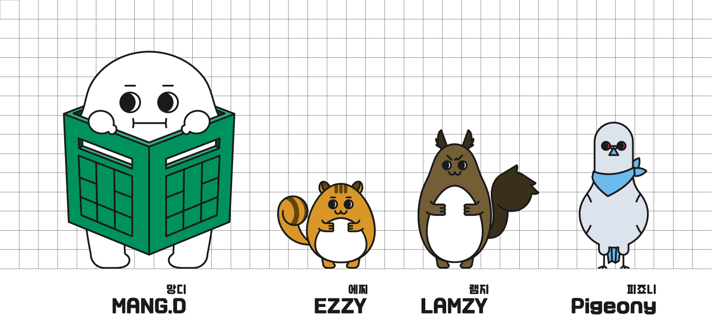

Project / Community Character Development
영등포 당산골 동네 캐릭터 개발
Dangsan-gol Neighborhood Character Development Project

영등포 당산골의 지역성을 로컬 캐릭터와 굿즈, 웹툰, 마케팅 콘텐츠로 확장해 생활상권과 공동체 이야기를 연결하려 했던 지역 브랜드 프로젝트다.
This project developed local characters and brand content for Dangsan-gol in Yeongdeungpo, using character-based goods, webtoons, and promotional storytelling to connect neighborhood identity with everyday community life.
프로젝트 개요
본 프로젝트는 서울 영등포구 당산골 일대를 배경으로, 동네를 상징하는 로컬 캐릭터 '망디(Mang D)'와 동료 캐릭터 그룹 '디돌즈(D.DOLZ)'를 활용한 지역 브랜드 사업이다. 유통의 중심지인 영등포의 특성과 청과물 시장의 플라스틱 박스에서 영감을 얻어 개발된 이 캐릭터는, 당산골의 정체성을 콘텐츠로 구현하는 것을 핵심 목표로 한다.
주요 목표는 캐릭터를 활용한 굿즈(MD 상품) 개발 및 판매, 생활상권과 커뮤니티스토어를 소개하는 웹툰 제작, 당산골 홍보 마케팅 등 다각적 활용 방안을 장기적으로 추진하는 것이다. 상품 판매 수익 일부는 당산골 기금으로 적립하여 지역사회에 환원하는 구조를 지향한다.
이 프로젝트에서 맡은 역할은 캐릭터 개발이 지역 브랜드로 이어질 수 있도록 방향을 정리하고 실행을 지원하는 일이었다. 단순한 시각 자산 제작에 그치지 않고, 지역의 생활문화와 상권을 연결하는 장기적 콘텐츠 플랫폼으로 확장할 가능성을 검토했다.
This project is a local brand initiative set in the Dangsan-gol neighborhood of Yeongdeungpo-gu, Seoul, centered around the locally developed character "Mang D" and the companion character group "D.DOLZ." The characters were inspired by the distinctive traits of Yeongdeungpo as a distribution hub, particularly the plastic crates found in its produce markets, and aim to embody the identity of Dangsan-gol through original content.
The primary objectives include the long-term development of goods (MD merchandise) featuring the characters, the production of webtoons introducing local shops and community stores, and the execution of various promotional and marketing activities for Dangsan-gol. A portion of the revenue generated from merchandise sales is intended to be set aside as a community fund, creating a structure that reinvests profits back into the local neighborhood.
My role was to support the project so the character system could function not just as a visual asset but as the basis of a broader neighborhood brand. The work considered how local identity, small business storytelling, and community benefit could be linked through a longer-term content platform.
State. 완료 Completed
Role. 개발 지원 Support
Team. 클로이 Chloe from 로모 Romor, 원두 Wondu
Social. instagram.com/whynot_mangsang